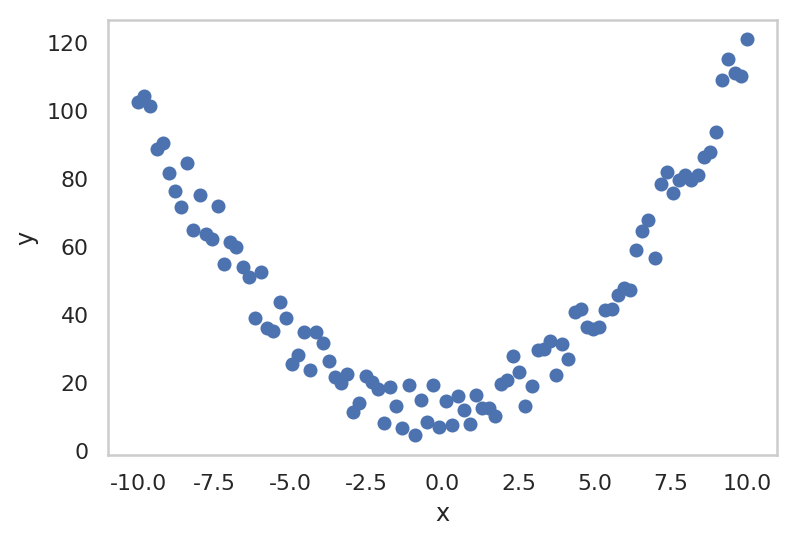
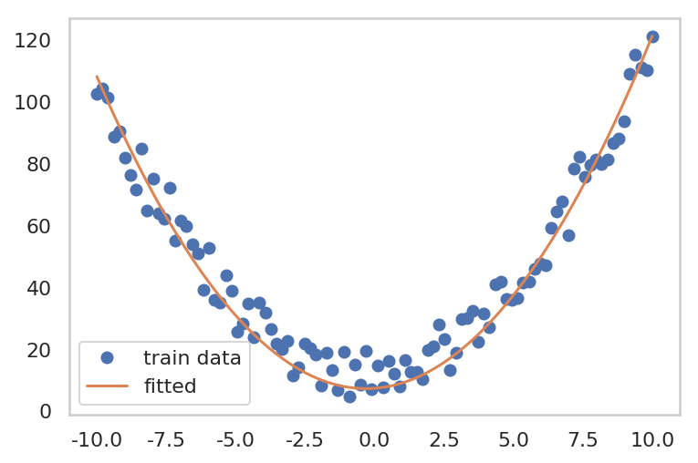

<!DOCTYPE html>
<html>
<head><meta name="generator" content="Hexo 3.8.0">
    <!-- hexo-inject:begin --><!-- hexo-inject:end --><meta charset="utf-8">

    

    
    <title>Linear Model with Pytorch | Emjay&#39;s DailyBlog</title>
    
    <meta name="viewport" content="width=device-width, initial-scale=1, maximum-scale=1">
    
        <meta name="keywords" content="">
    
    <meta name="description" content="Linear Model with Pytorch12345678import torchimport torch.optim as optimimport numpy as npimport warningswarnings.filterwarnings(&quot;ignore&quot;)%config InlineBackend.figure_format = &apos;retina&apos;%matplotlib inli">
<meta name="keywords" content="hexo,datascience,datascientist">
<meta property="og:type" content="article">
<meta property="og:title" content="Linear Model with Pytorch">
<meta property="og:url" content="https://emjayahn.github.io/2019/05/04/Linear-Model-with-Pytorch/index.html">
<meta property="og:site_name" content="Emjay&#39;s DailyBlog">
<meta property="og:description" content="Linear Model with Pytorch12345678import torchimport torch.optim as optimimport numpy as npimport warningswarnings.filterwarnings(&quot;ignore&quot;)%config InlineBackend.figure_format = &apos;retina&apos;%matplotlib inli">
<meta property="og:locale" content="en">
<meta property="og:image" content="https://emjayahn.github.io/2019/05/04/Linear-Model-with-Pytorch/output_3_0.png">
<meta property="og:updated_time" content="2019-05-04T14:57:50.611Z">
<meta name="twitter:card" content="summary">
<meta name="twitter:title" content="Linear Model with Pytorch">
<meta name="twitter:description" content="Linear Model with Pytorch12345678import torchimport torch.optim as optimimport numpy as npimport warningswarnings.filterwarnings(&quot;ignore&quot;)%config InlineBackend.figure_format = &apos;retina&apos;%matplotlib inli">
<meta name="twitter:image" content="https://emjayahn.github.io/2019/05/04/Linear-Model-with-Pytorch/output_3_0.png">
    

    
        <link rel="alternate" href="/atom.xml" title="Emjay&#39;s DailyBlog" type="application/atom+xml">
    

    

    <link rel="stylesheet" href="/libs/font-awesome/css/font-awesome.min.css">
    <link rel="stylesheet" href="/libs/titillium-web/styles.css">
    <link rel="stylesheet" href="/libs/source-code-pro/styles.css">

    <link rel="stylesheet" href="/css/style.css">

    <script src="/libs/jquery/3.3.1/jquery.min.js"></script>
    
    
        <link rel="stylesheet" href="/libs/lightgallery/css/lightgallery.min.css">
    
    
        <link rel="stylesheet" href="/libs/justified-gallery/justifiedGallery.min.css">
    
    
        <script type="text/javascript">
(function(i,s,o,g,r,a,m) {i['GoogleAnalyticsObject']=r;i[r]=i[r]||function() {
(i[r].q=i[r].q||[]).push(arguments)},i[r].l=1*new Date();a=s.createElement(o),
m=s.getElementsByTagName(o)[0];a.async=1;a.src=g;m.parentNode.insertBefore(a,m)
})(window,document,'script','//www.google-analytics.com/analytics.js','ga');

ga('create', 'UA-128251719-1', 'auto');
ga('send', 'pageview');

</script><!-- hexo-inject:begin --><!-- hexo-inject:end -->
    
    


</head>
</html>
<body>
    <!-- hexo-inject:begin --><!-- hexo-inject:end --><div id="wrap">
        <header id="header">
    <div id="header-outer" class="outer">
        <div class="container">
            <div class="container-inner">
                <div id="header-title">
                    <h1 class="logo-wrap">
                        <a href="/" class="logo"></a>
                    </h1>
                    
                        <h2 class="subtitle-wrap">
                            <p class="subtitle">Emjay&#39;s DataScience &amp; Development</p>
                        </h2>
                    
                </div>
                <div id="header-inner" class="nav-container">
                    <a id="main-nav-toggle" class="nav-icon fa fa-bars"></a>
                    <div class="nav-container-inner">
                        <ul id="main-nav">
                            
                                <li class="main-nav-list-item">
                                    <a class="main-nav-list-link" href="/">Home</a>
                                </li>
                            
                                        <ul class="main-nav-list"><li class="main-nav-list-item"><a class="main-nav-list-link" href="/categories/DataStructure/">DataStructure</a></li><li class="main-nav-list-item"><a class="main-nav-list-link" href="/categories/Diary/">Diary</a></li><li class="main-nav-list-item"><a class="main-nav-list-link" href="/categories/Lecture/">Lecture</a><ul class="main-nav-list-child"><li class="main-nav-list-item"><a class="main-nav-list-link" href="/categories/Lecture/딥러닝을-이용한-자연어-처리/">딥러닝을 이용한 자연어 처리</a></li></ul></li><li class="main-nav-list-item"><a class="main-nav-list-link" href="/categories/MachineLearning/">MachineLearning</a><ul class="main-nav-list-child"><li class="main-nav-list-item"><a class="main-nav-list-link" href="/categories/MachineLearning/Pytorch/">Pytorch</a></li></ul></li><li class="main-nav-list-item"><a class="main-nav-list-link" href="/categories/Math/">Math</a></li><li class="main-nav-list-item"><a class="main-nav-list-link" href="/categories/wiki/">wiki</a><ul class="main-nav-list-child"><li class="main-nav-list-item"><a class="main-nav-list-link" href="/categories/wiki/MySQL/">MySQL</a></li><li class="main-nav-list-item"><a class="main-nav-list-link" href="/categories/wiki/NGINX/">NGINX</a></li><li class="main-nav-list-item"><a class="main-nav-list-link" href="/categories/wiki/Pillow/">Pillow</a></li><li class="main-nav-list-item"><a class="main-nav-list-link" href="/categories/wiki/Provision/">Provision</a></li><li class="main-nav-list-item"><a class="main-nav-list-link" href="/categories/wiki/Python/">Python</a></li><li class="main-nav-list-item"><a class="main-nav-list-link" href="/categories/wiki/Requests/">Requests</a></li><li class="main-nav-list-item"><a class="main-nav-list-link" href="/categories/wiki/Scrapy/">Scrapy</a></li><li class="main-nav-list-item"><a class="main-nav-list-link" href="/categories/wiki/Selenium/">Selenium</a></li><li class="main-nav-list-item"><a class="main-nav-list-link" href="/categories/wiki/Xpath/">Xpath</a></li></ul></li></ul>
                                    
                                <li class="main-nav-list-item">
                                    <a class="main-nav-list-link" href="/about/index.html">About</a>
                                </li>
                            
                        </ul>
                        <nav id="sub-nav">
                            <div id="search-form-wrap">

    <form class="search-form">
        <input type="text" class="ins-search-input search-form-input" placeholder="Search">
        <button type="submit" class="search-form-submit"></button>
    </form>
    <div class="ins-search">
    <div class="ins-search-mask"></div>
    <div class="ins-search-container">
        <div class="ins-input-wrapper">
            <input type="text" class="ins-search-input" placeholder="Type something...">
            <span class="ins-close ins-selectable"><i class="fa fa-times-circle"></i></span>
        </div>
        <div class="ins-section-wrapper">
            <div class="ins-section-container"></div>
        </div>
    </div>
</div>
<script>
(function (window) {
    var INSIGHT_CONFIG = {
        TRANSLATION: {
            POSTS: 'Posts',
            PAGES: 'Pages',
            CATEGORIES: 'Categories',
            TAGS: 'Tags',
            UNTITLED: '(Untitled)',
        },
        ROOT_URL: '/',
        CONTENT_URL: '/content.json',
    };
    window.INSIGHT_CONFIG = INSIGHT_CONFIG;
})(window);
</script>
<script src="/js/insight.js"></script>

</div>
                        </nav>
                    </div>
                </div>
            </div>
        </div>
    </div>
</header>
        <div class="container">
            <div class="main-body container-inner">
                <div class="main-body-inner">
                    <section id="main">
                        <div class="main-body-header">
    <h1 class="header">
    
    uncategorized
    </h1>
</div>

                        <div class="main-body-content">
                            <article id="post-Linear-Model-with-Pytorch" class="article article-single article-type-post" itemscope="" itemprop="blogPost">
    <div class="article-inner">
        
            <header class="article-header">
                
    
        <h1 class="article-title" itemprop="name">
        Linear Model with Pytorch
        </h1>
    

            </header>
        
        
            <div class="article-meta">
                
    <div class="article-date">
        <a href="/2019/05/04/Linear-Model-with-Pytorch/" class="article-date">
            <time datetime="2019-05-04T14:54:06.000Z" itemprop="datePublished">2019-05-04</time>
        </a>
    </div>

		

                
            </div>
        
        
        <div class="article-entry" itemprop="articleBody">
            <h1 id="Linear-Model-with-Pytorch"><a href="#Linear-Model-with-Pytorch" class="headerlink" title="Linear Model with Pytorch"></a>Linear Model with Pytorch</h1><figure class="highlight python"><table><tr><td class="gutter"><pre><span class="line">1</span><br><span class="line">2</span><br><span class="line">3</span><br><span class="line">4</span><br><span class="line">5</span><br><span class="line">6</span><br><span class="line">7</span><br><span class="line">8</span><br></pre></td><td class="code"><pre><span class="line"><span class="keyword">import</span> torch</span><br><span class="line"><span class="keyword">import</span> torch.optim <span class="keyword">as</span> optim</span><br><span class="line"></span><br><span class="line"><span class="keyword">import</span> numpy <span class="keyword">as</span> np</span><br><span class="line"><span class="keyword">import</span> warnings</span><br><span class="line">warnings.filterwarnings(<span class="string">"ignore"</span>)</span><br><span class="line">%config InlineBackend.figure_format = <span class="string">'retina'</span></span><br><span class="line">%matplotlib inline</span><br></pre></td></tr></table></figure>
<h2 id="1-Quadratic-Regression-Model"><a href="#1-Quadratic-Regression-Model" class="headerlink" title="1. Quadratic Regression Model"></a>1. Quadratic Regression Model</h2><p>$$<br>f(x) = w_0 + w_1x + w_2x^2<br>$$</p>
<figure class="highlight python"><table><tr><td class="gutter"><pre><span class="line">1</span><br><span class="line">2</span><br><span class="line">3</span><br><span class="line">4</span><br><span class="line">5</span><br><span class="line">6</span><br><span class="line">7</span><br><span class="line">8</span><br></pre></td><td class="code"><pre><span class="line">x = np.linspace(<span class="number">-10</span>, <span class="number">10</span>, <span class="number">100</span>)</span><br><span class="line">y = x**<span class="number">2</span> + <span class="number">0.7</span> * x + <span class="number">3.0</span> + <span class="number">20</span> * np.random.rand(len(x))</span><br><span class="line"></span><br><span class="line">plt.plot(x, y, <span class="string">'o'</span>)</span><br><span class="line">plt.grid()</span><br><span class="line">plt.xlabel(<span class="string">'x'</span>)</span><br><span class="line">plt.ylabel(<span class="string">'y'</span>)</span><br><span class="line">plt.show()</span><br></pre></td></tr></table></figure>
<p></p>
<figure class="highlight python"><table><tr><td class="gutter"><pre><span class="line">1</span><br><span class="line">2</span><br><span class="line">3</span><br><span class="line">4</span><br><span class="line">5</span><br></pre></td><td class="code"><pre><span class="line">x_train = torch.FloatTensor([[each_x**<span class="number">2</span>, each_x, <span class="number">1</span>] <span class="keyword">for</span> each_x <span class="keyword">in</span> x])</span><br><span class="line">y_train = torch.FloatTensor(y)</span><br><span class="line"></span><br><span class="line">print(<span class="string">"x_train shape: "</span>, x_train.shape)</span><br><span class="line">print(<span class="string">"y_train shape: "</span>, y_train.shape)</span><br></pre></td></tr></table></figure>
<pre><code>x_train shape:  torch.Size([100, 3])
y_train shape:  torch.Size([100])
</code></pre><figure class="highlight python"><table><tr><td class="gutter"><pre><span class="line">1</span><br><span class="line">2</span><br><span class="line">3</span><br><span class="line">4</span><br><span class="line">5</span><br><span class="line">6</span><br><span class="line">7</span><br><span class="line">8</span><br><span class="line">9</span><br><span class="line">10</span><br><span class="line">11</span><br><span class="line">12</span><br><span class="line">13</span><br><span class="line">14</span><br><span class="line">15</span><br><span class="line">16</span><br><span class="line">17</span><br></pre></td><td class="code"><pre><span class="line">W = torch.zeros(<span class="number">3</span>, requires_grad=<span class="keyword">True</span>)</span><br><span class="line"></span><br><span class="line">optimizer = optim.SGD([W], lr=<span class="number">0.0001</span>)</span><br><span class="line"></span><br><span class="line">epochs = <span class="number">10000</span></span><br><span class="line"></span><br><span class="line"><span class="keyword">for</span> epoch <span class="keyword">in</span> range(<span class="number">1</span>, epochs + <span class="number">1</span>):</span><br><span class="line">    hypothesis = x_train.matmul(W)</span><br><span class="line">    </span><br><span class="line">    loss = torch.mean((hypothesis - y_train) ** <span class="number">2</span>)</span><br><span class="line">    </span><br><span class="line">    optimizer.zero_grad()</span><br><span class="line">    loss.backward()</span><br><span class="line">    optimizer.step()</span><br><span class="line">    </span><br><span class="line">    <span class="keyword">if</span> epoch % <span class="number">1000</span> == <span class="number">0</span>:</span><br><span class="line">        print(<span class="string">"epoch: &#123;&#125; -- Parameters: W: &#123;&#125; -- loss &#123;&#125;"</span>.format(epoch, W.data, loss.data))</span><br></pre></td></tr></table></figure>
<pre><code>epoch: 1000 -- Parameters: W: tensor([1.1812, 0.6252, 1.1738]) -- loss 99.02932739257812
epoch: 2000 -- Parameters: W: tensor([1.1640, 0.6259, 2.2299]) -- loss 87.8645248413086
epoch: 3000 -- Parameters: W: tensor([1.1482, 0.6259, 3.1962]) -- loss 78.51750946044922
epoch: 4000 -- Parameters: W: tensor([1.1337, 0.6259, 4.0803]) -- loss 70.69230651855469
epoch: 5000 -- Parameters: W: tensor([1.1205, 0.6259, 4.8893]) -- loss 64.14116668701172
epoch: 6000 -- Parameters: W: tensor([1.1084, 0.6259, 5.6295]) -- loss 58.65663146972656
epoch: 7000 -- Parameters: W: tensor([1.0973, 0.6259, 6.3067]) -- loss 54.0650634765625
epoch: 8000 -- Parameters: W: tensor([1.0872, 0.6259, 6.9264]) -- loss 50.221073150634766
epoch: 9000 -- Parameters: W: tensor([1.0779, 0.6259, 7.4934]) -- loss 47.0029182434082
epoch: 10000 -- Parameters: W: tensor([1.0695, 0.6259, 8.0122]) -- loss 44.3087158203125
</code></pre><figure class="highlight python"><table><tr><td class="gutter"><pre><span class="line">1</span><br><span class="line">2</span><br><span class="line">3</span><br><span class="line">4</span><br><span class="line">5</span><br></pre></td><td class="code"><pre><span class="line">plt.plot(x, y, <span class="string">'o'</span>, label=<span class="string">'train data'</span>)</span><br><span class="line">plt.plot(x, (x_train.data.matmul(W.data).numpy()), <span class="string">'-'</span>, label=<span class="string">'fitted'</span>)</span><br><span class="line">plt.grid()</span><br><span class="line">plt.legend()</span><br><span class="line">plt.show()</span><br></pre></td></tr></table></figure>
<p></p>

        </div>
        <footer class="article-footer">
            


    <div class="a2a_kit a2a_default_style">
    <a class="a2a_dd" href="https://www.addtoany.com/share">Share</a>
    <span class="a2a_divider"></span>
    <a class="a2a_button_facebook"></a>
    <a class="a2a_button_twitter"></a>
    <a class="a2a_button_google_plus"></a>
    <a class="a2a_button_pinterest"></a>
    <a class="a2a_button_tumblr"></a>
</div>
<script type="text/javascript" src="//static.addtoany.com/menu/page.js"></script>
<style>
    .a2a_menu {
        border-radius: 4px;
    }
    .a2a_menu a {
        margin: 2px 0;
        font-size: 14px;
        line-height: 16px;
        border-radius: 4px;
        color: inherit !important;
        font-family: 'Microsoft Yahei';
    }
    #a2apage_dropdown {
        margin: 10px 0;
    }
    .a2a_mini_services {
        padding: 10px;
    }
    a.a2a_i,
    i.a2a_i {
        width: 122px;
        line-height: 16px;
    }
    a.a2a_i .a2a_svg,
    a.a2a_more .a2a_svg {
        width: 16px;
        height: 16px;
        line-height: 16px;
        vertical-align: top;
        background-size: 16px;
    }
    a.a2a_i {
        border: none !important;
    }
    a.a2a_menu_show_more_less {
        margin: 0;
        padding: 10px 0;
        line-height: 16px;
    }
    .a2a_mini_services:after{content:".";display:block;height:0;clear:both;visibility:hidden}
    .a2a_mini_services{*+height:1%;}
</style>


        </footer>
    </div>
</article>

    <section id="comments">
    
        
    <div id="disqus_thread">
        <noscript>Please enable JavaScript to view the <a href="//disqus.com/?ref_noscript">comments powered by Disqus.</a></noscript>
    </div>

    
    </section>


                        </div>
                    </section>
                    <aside id="sidebar">
    <a class="sidebar-toggle" title="Expand Sidebar"><i class="toggle icon"></i></a>
    <div class="sidebar-top">
        <p>follow:</p>
        <ul class="social-links">
            
                
                <li>
                    <a class="social-tooltip" title="github" href="https://github.com/emjayahn" target="_blank" rel="noopener">
                        <i class="icon fa fa-github"></i>
                    </a>
                </li>
                
            
                
                <li>
                    <a class="social-tooltip" title="rss" href="/atom.xml" target="_blank" rel="noopener">
                        <i class="icon fa fa-rss"></i>
                    </a>
                </li>
                
            
        </ul>
    </div>
    
        
<nav id="article-nav">
    
    
        <a href="/2019/05/03/Linear-Regression-with-Pytorch/" id="article-nav-older" class="article-nav-link-wrap">
        <strong class="article-nav-caption">older</strong>
        <p class="article-nav-title">Linear Regression with Pytorch</p>
        <i class="icon fa fa-chevron-left" id="icon-chevron-left"></i>
        </a>
    
</nav>

    
    <div class="widgets-container">
        
            
                
    <div class="widget-wrap widget-list">
        <h3 class="widget-title">categories</h3>
        <div class="widget">
            <ul class="category-list"><li class="category-list-item"><a class="category-list-link" href="/categories/DataStructure/">DataStructure</a><span class="category-list-count">2</span></li><li class="category-list-item"><a class="category-list-link" href="/categories/Diary/">Diary</a><span class="category-list-count">42</span></li><li class="category-list-item"><a class="category-list-link" href="/categories/Lecture/">Lecture</a><span class="category-list-count">1</span><ul class="category-list-child"><li class="category-list-item"><a class="category-list-link" href="/categories/Lecture/딥러닝을-이용한-자연어-처리/">딥러닝을 이용한 자연어 처리</a><span class="category-list-count">1</span></li></ul></li><li class="category-list-item"><a class="category-list-link" href="/categories/MachineLearning/">MachineLearning</a><span class="category-list-count">1</span><ul class="category-list-child"><li class="category-list-item"><a class="category-list-link" href="/categories/MachineLearning/Pytorch/">Pytorch</a><span class="category-list-count">1</span></li></ul></li><li class="category-list-item"><a class="category-list-link" href="/categories/Math/">Math</a><span class="category-list-count">2</span></li><li class="category-list-item"><a class="category-list-link" href="/categories/wiki/">wiki</a><span class="category-list-count">10</span><ul class="category-list-child"><li class="category-list-item"><a class="category-list-link" href="/categories/wiki/MySQL/">MySQL</a><span class="category-list-count">1</span></li><li class="category-list-item"><a class="category-list-link" href="/categories/wiki/NGINX/">NGINX</a><span class="category-list-count">1</span></li><li class="category-list-item"><a class="category-list-link" href="/categories/wiki/Pillow/">Pillow</a><span class="category-list-count">1</span></li><li class="category-list-item"><a class="category-list-link" href="/categories/wiki/Provision/">Provision</a><span class="category-list-count">1</span></li><li class="category-list-item"><a class="category-list-link" href="/categories/wiki/Python/">Python</a><span class="category-list-count">1</span></li><li class="category-list-item"><a class="category-list-link" href="/categories/wiki/Requests/">Requests</a><span class="category-list-count">1</span></li><li class="category-list-item"><a class="category-list-link" href="/categories/wiki/Scrapy/">Scrapy</a><span class="category-list-count">1</span></li><li class="category-list-item"><a class="category-list-link" href="/categories/wiki/Selenium/">Selenium</a><span class="category-list-count">1</span></li><li class="category-list-item"><a class="category-list-link" href="/categories/wiki/Xpath/">Xpath</a><span class="category-list-count">1</span></li></ul></li></ul>
        </div>
    </div>


            
                
    <div class="widget-wrap widget-list">
        <h3 class="widget-title">archives</h3>
        <div class="widget">
            <ul class="archive-list"><li class="archive-list-item"><a class="archive-list-link" href="/archives/2019/05/">May 2019</a><span class="archive-list-count">3</span></li><li class="archive-list-item"><a class="archive-list-link" href="/archives/2019/01/">January 2019</a><span class="archive-list-count">3</span></li><li class="archive-list-item"><a class="archive-list-link" href="/archives/2018/12/">December 2018</a><span class="archive-list-count">12</span></li><li class="archive-list-item"><a class="archive-list-link" href="/archives/2018/11/">November 2018</a><span class="archive-list-count">25</span></li><li class="archive-list-item"><a class="archive-list-link" href="/archives/2018/10/">October 2018</a><span class="archive-list-count">20</span></li></ul>
        </div>
    </div>


            
        
    </div>
</aside>

                </div>
            </div>
        </div>
        <footer id="footer">
    <div class="container">
        <div class="container-inner">
            <a id="back-to-top" href="javascript:;"><i class="icon fa fa-angle-up"></i></a>
            <div class="credit">
                <h1 class="logo-wrap">
                    <a href="/" class="logo"></a>
                </h1>
                <p>&copy; 2019 EmjayAhn(Minjae Ahn)</p>
                <p>Powered by <a href="//hexo.io/" target="_blank">Hexo</a>. Theme by <a href="//github.com/ppoffice" target="_blank">PPOffice</a></p>
            </div>
            <div class="footer-plugins">
              
    


            </div>
        </div>
    </div>
</footer>

        
    
    <script>
    var disqus_shortname = 'emjaygithubpage';
    
    
    var disqus_url = 'https://emjayahn.github.io/2019/05/04/Linear-Model-with-Pytorch/';
    
    (function() {
    var dsq = document.createElement('script');
    dsq.type = 'text/javascript';
    dsq.async = true;
    dsq.src = '//' + disqus_shortname + '.disqus.com/embed.js';
    (document.getElementsByTagName('head')[0] || document.getElementsByTagName('body')[0]).appendChild(dsq);
    })();
    </script>


    
        <script src="/libs/lightgallery/js/lightgallery.min.js"></script>
        <script src="/libs/lightgallery/js/lg-thumbnail.min.js"></script>
        <script src="/libs/lightgallery/js/lg-pager.min.js"></script>
        <script src="/libs/lightgallery/js/lg-autoplay.min.js"></script>
        <script src="/libs/lightgallery/js/lg-fullscreen.min.js"></script>
        <script src="/libs/lightgallery/js/lg-zoom.min.js"></script>
        <script src="/libs/lightgallery/js/lg-hash.min.js"></script>
        <script src="/libs/lightgallery/js/lg-share.min.js"></script>
        <script src="/libs/lightgallery/js/lg-video.min.js"></script>
    
    
        <script src="/libs/justified-gallery/jquery.justifiedGallery.min.js"></script>
    
    
        <script type="text/x-mathjax-config">
            MathJax.Hub.Config({ tex2jax: { inlineMath: [['$','$'], ['\\(','\\)']] } });
        </script>
        <script src="https://cdnjs.cloudflare.com/ajax/libs/mathjax/2.7.1/MathJax.js?config=TeX-MML-AM_CHTML"></script>
    


<!-- Custom Scripts -->
<script src="/js/main.js"></script>

    </div><!-- hexo-inject:begin --><!-- Begin: Injected MathJax -->
<script type="text/x-mathjax-config">
  MathJax.Hub.Config({"tex2jax":{"inlineMath":[["$","$"],["\\(","\\)"]],"skipTags":["script","noscript","style","textarea","pre","code"],"processEscapes":true},"TeX":{"equationNumbers":{"autoNumber":"AMS"}}});
</script>

<script type="text/x-mathjax-config">
  MathJax.Hub.Queue(function() {
    var all = MathJax.Hub.getAllJax(), i;
    for(i=0; i < all.length; i += 1) {
      all[i].SourceElement().parentNode.className += ' has-jax';
    }
  });
</script>

<script type="text/javascript" src="https://cdnjs.cloudflare.com/ajax/libs/mathjax/2.7.1/MathJax.js">
</script>
<!-- End: Injected MathJax -->
<!-- hexo-inject:end -->
</body>
</html>
